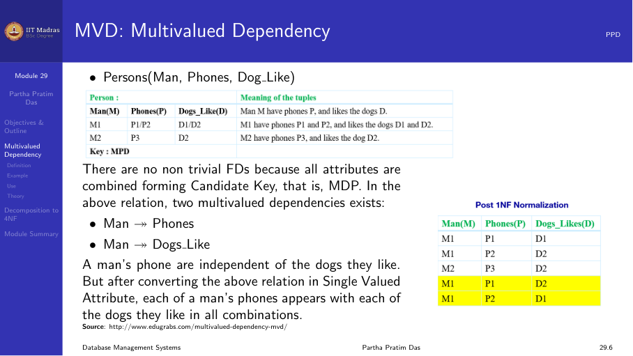
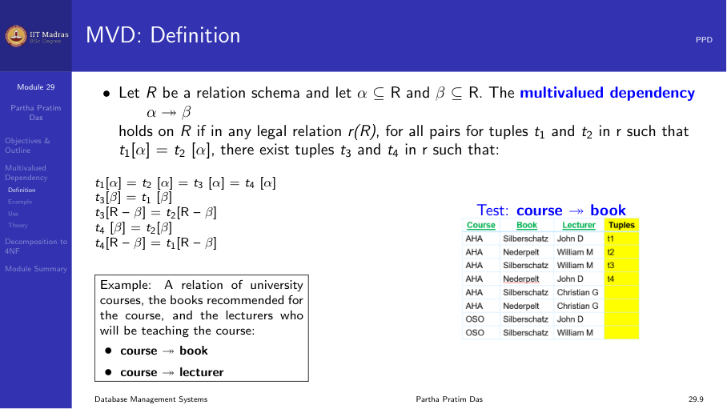
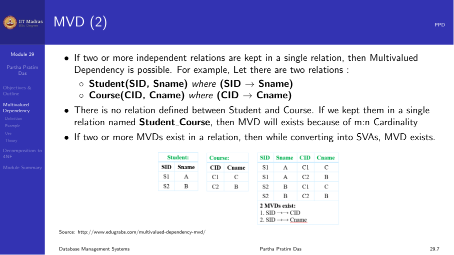
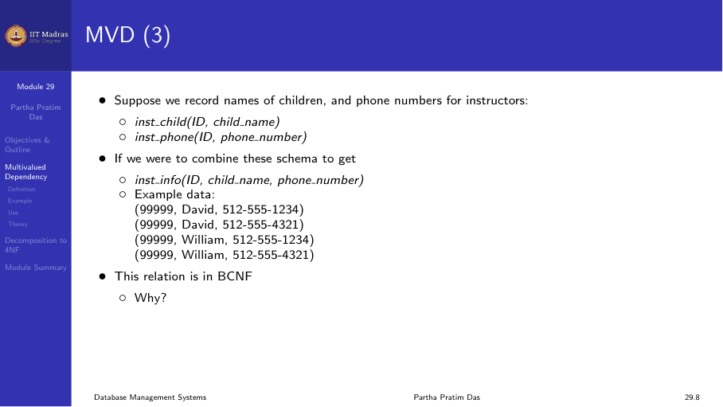
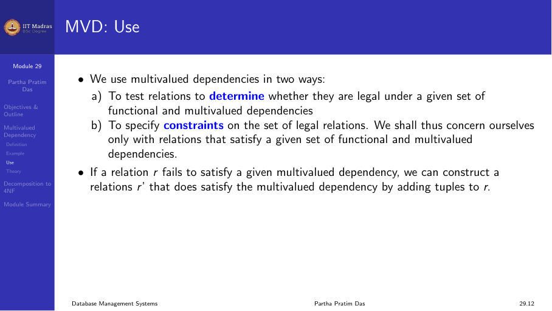
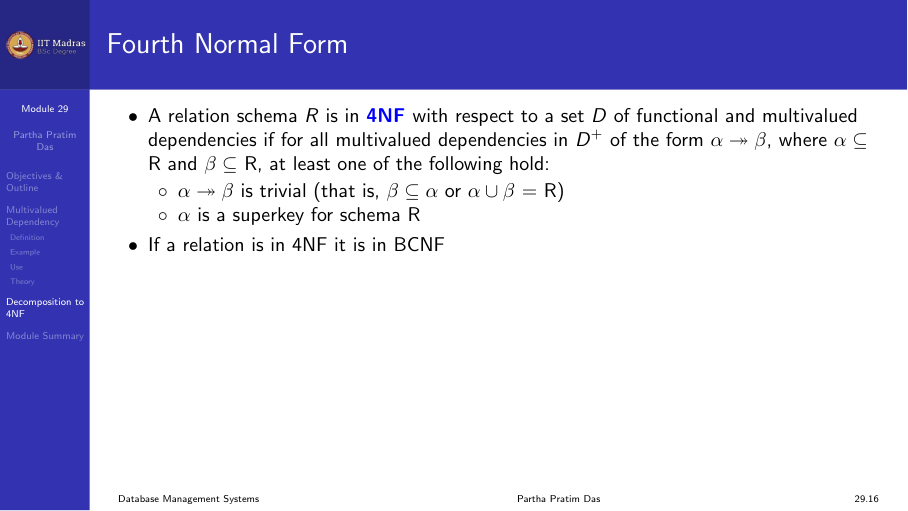

6.4 Multivalued dependencies and Fourth Normal Form
The limitation of functional dependencies
Functional dependencies handle situations where one set of attributes uniquely determines another set. But there are cases where no functional dependency exists, yet there is still redundancy. This happens when attributes can have multiple independent values.
Consider a person who has multiple phone numbers and likes multiple dogs. The schema Person(Name, Phone, Dog_Like) has no non-trivial functional dependencies. The only key is all three attributes together. By the BCNF definition, this schema is in BCNF. But there is a different kind of problem.

To make the data fit 1NF, we flatten the multiple values. If a person has two phones (P1, P2) and likes two dogs (D1, D2), we get all four combinations:
| Name | Phone | Dog_Like |
|---|---|---|
| Mani | P1 | D1 |
| Mani | P1 | D2 |
| Mani | P2 | D1 |
| Mani | P2 | D2 |
The relation is in BCNF because there is no non-trivial FD. But we have a tremendous amount of redundancy. The phone P1 is repeated twice. The dog D1 is repeated twice. This redundancy comes from the fact that Phone and Dog_Like are independent of each other. They both depend on Name, but they do not depend on each other.
Functional dependencies cannot capture this kind of redundancy. We need a new kind of dependency: the multivalued dependency.
Multivalued dependency definition
A multivalued dependency (MVD) is written as:
X \twoheadrightarrow Y
It is read as “X multi-determines Y”. It holds on a relation R if whenever two tuples t1 and t2 agree on all attributes in X, then there must also exist a tuple t3 (and by symmetry, t4) such that: - t3 agrees with t1 and t2 on X. - t3 agrees with t1 on Y. - t3 agrees with t2 on all attributes of R that are not in X or Y.

In simpler terms, an MVD X ->-> Y means that the set of Y values associated with a given X value is independent of the other attributes (R - X - Y).
MVD from independent relations
If two relations are independent and we combine them into one table, we get MVDs. For example, consider Student(SID, Sname) and Course(CID, Cname). These are independent. If we combine them into a single table, we get a Cartesian product. The MVD SID ->-> CID holds because for a given student, all course combinations appear.

MVD from multivalued attributes
The classic example is an instructor who has multiple children and multiple phone numbers.
Instructor(ID, Child_Name, Phone)
There is no FD. If ID 101 has children David and William and phones 555-1234 and 555-5678, we get all four combinations. The MVDs are: - ID ->-> Child_Name - ID ->-> Phone
This is exactly the same pattern as the Person example.

Relationship between FD and MVD
Every functional dependency is also a multivalued dependency. If X -> Y holds, then X ->-> Y also holds. But the reverse is not true. A multivalued dependency does not imply a functional dependency.
Inference rules for MVDs
Like Armstrong’s axioms for FDs, there are inference rules for MVDs.
Complement rule. If X ->-> Y, then X ->-> (R - X - Y). This means that if X multi-determines Y, it also multi-determines the remaining attributes.
Augmentation rule. If X ->-> Y and W ⊆ Z, then XZ ->-> YW. Unlike the FD augmentation rule, the left and right sides can be augmented differently.
Transitivity rule. If X ->-> Y and Y ->-> Z, then X ->-> (Z - Y).
Replication rule. If X -> Y, then X ->-> Y. Every FD is an MVD.
Coalescence rule. If X ->-> Y and there exists a Z such that Z ⊆ Y and there is a W disjoint from Y with W -> Z, then X -> Z.
Fourth Normal Form (4NF)
A relation schema R is in 4NF with respect to a set of functional and multivalued dependencies D if for every non-trivial MVD X ->-> Y in D+:
- X is a superkey of R, or
- The MVD is trivial (Y ⊆ X or X ∪ Y = R).

Notice that this is exactly the same shape as the BCNF definition. The only difference is that we check MVDs instead of FDs.
Since every FD is an MVD, any relation in 4NF is automatically in BCNF. The hierarchy is:
4NF ⊂ BCNF ⊂ 3NF ⊂ 2NF ⊂ 1NF
4NF decomposition algorithm
The 4NF decomposition algorithm is almost identical to the BCNF algorithm.
Find a non-trivial MVD X ->-> Y that violates 4NF. That is, X is not a superkey.
Decompose R into two relations:
- R1 = X ∪ Y
- R2 = R - Y
Note: Unlike BCNF where we remove only Y - X, in 4NF we remove all of Y.
Check if each resulting relation is in 4NF. If not, decompose further.
Stop when all relations are in 4NF.
The decomposition is always lossless join. The common attribute X is a key of R1.
Example: Person relation
Consider Person(Name, Phone, Dog_Like, Address) where: - Name ->-> Phone (MVD) - Name ->-> Dog_Like (MVD) - Name -> Address (FD)
The key is {Name, Phone, Dog_Like} (all three together since no FD gives a smaller key).
All MVDs and the FD violate 4NF because the left-hand side Name is not a superkey.

Step 1: Decompose using Name ->-> Phone. - R1 = (Name, Phone) - R2 = (Name, Dog_Like, Address)
Now check R2. It still has Name ->-> Dog_Like (MVD) and Name -> Address (FD).
Step 2: Decompose R2 using Name ->-> Dog_Like. - R3 = (Name, Dog_Like) - R4 = (Name, Address)
Now all three relations are in 4NF: - R1(Name, Phone): Only FD Name ->-> Phone, and Name is the key. - R3(Name, Dog_Like): Only MVD Name ->-> Dog_Like, and Name is the key. - R4(Name, Address): Only FD Name -> Address, and Name is the key.
The decomposition is lossless join and dependency preserving.
When to use 4NF
Multivalued dependencies are less common than functional dependencies in practice. Situations that need 4NF typically involve:
- Multiple phone numbers for a person.
- Multiple addresses for a person.
- Multiple skills for an employee.
- Any case where two sets of multivalued attributes are independent.
In many real designs, these situations are handled by creating separate tables during the ER modeling phase, long before 4NF is needed. But the formal theory of MVDs and 4NF provides a systematic way to reason about and resolve these cases.
Beyond 4NF
Even 4NF does not remove all kinds of redundancy. There are higher normal forms:
Fifth Normal Form (5NF). Also called Project-Join Normal Form (PJNF). Handles join dependencies where a relation can be decomposed into three or more relations.
Domain-Key Normal Form (DKNF). A relation is in DKNF if every constraint is a logical consequence of the domain constraints and key constraints. This is the ultimate normal form but is rarely achievable in practice.
Sixth Normal Form (6NF). Handles temporal data by decomposing until no further non-key dependencies exist.
These higher normal forms are rarely used in practical database design. Most real databases target 3NF or BCNF.
Summary
- Multivalued dependencies capture redundancy that functional dependencies cannot.
- An MVD X ->-> Y means the Y values of an X are independent of the other attributes.
- Every FD is an MVD, but not every MVD is an FD.
- 4NF requires that every non-trivial MVD has a superkey on the left side.
- 4NF decomposition is like BCNF decomposition, applied to MVDs instead of FDs.
- 4NF implies BCNF, which implies 3NF, and so on.
- 4NF is less frequently needed in practice because multivalued attributes are often handled during ER design.